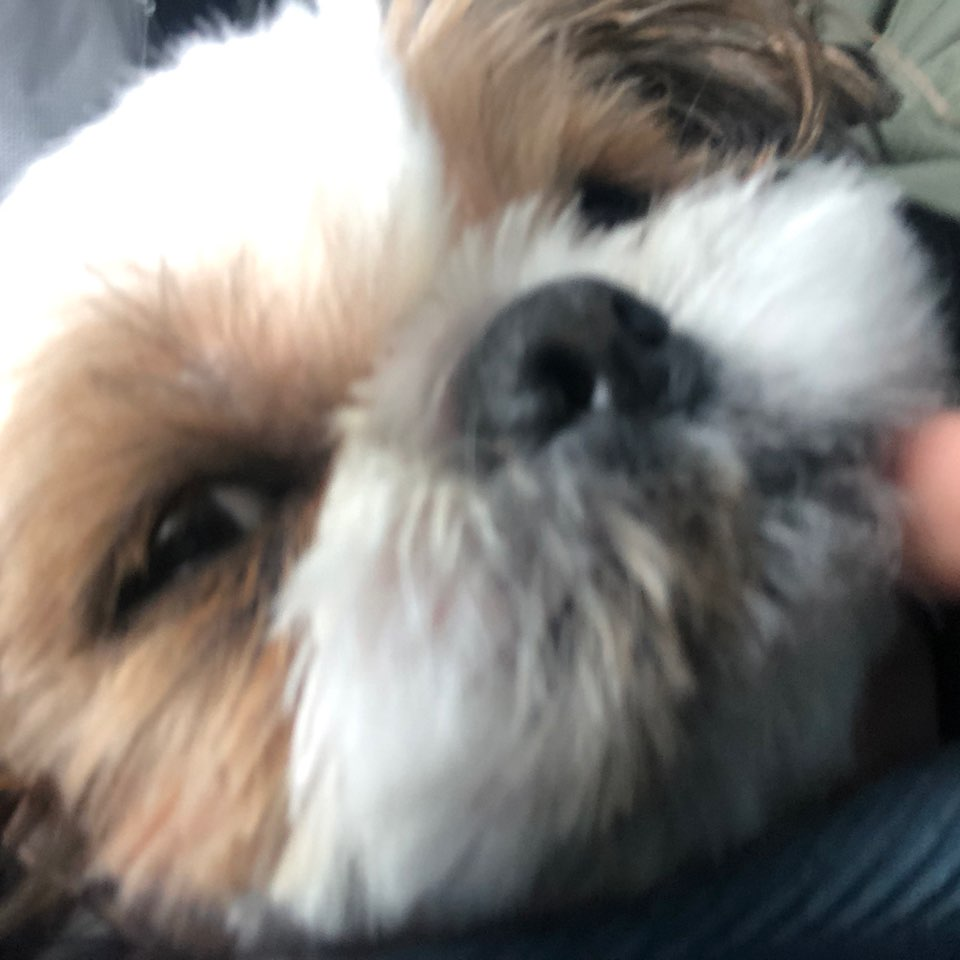
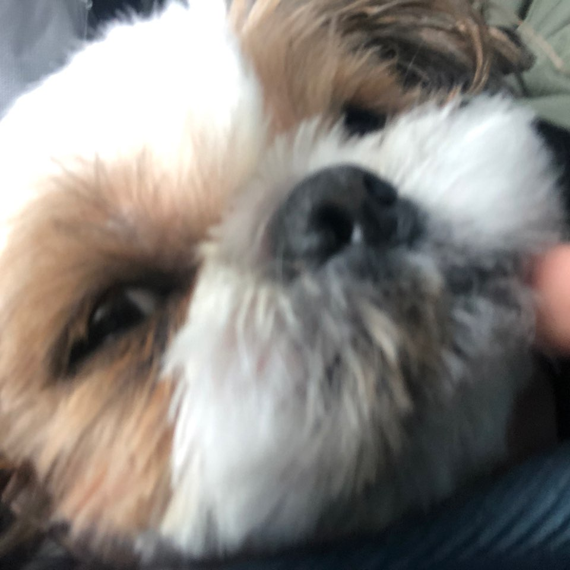

안녕하세요! 이번에 멋쟁이 사자처럼 8기에 들어오게 된 조민재입니다!! 만나서 반가워요~@~@! 저는 고양이를 정말 좋아해요. 얼마전에도 친구 집에 가서 고양이를 만나고 왔어요. 이름은 마루입니다. 연한 갈색인데 참 귀여워요. 아! 강아지 사진은 왜 있냐면요... 사실 저는 강아지를 키우거든요! 이름은 쩡이입니다. 저랑 8년이나 벌써 같이 지냈어요! 여러분도 귀여운 생명체들을 좋아하세요? 공감대를 .. 형성하구 싶습니다 :D~!~! 조민재였습니다..!!

 
